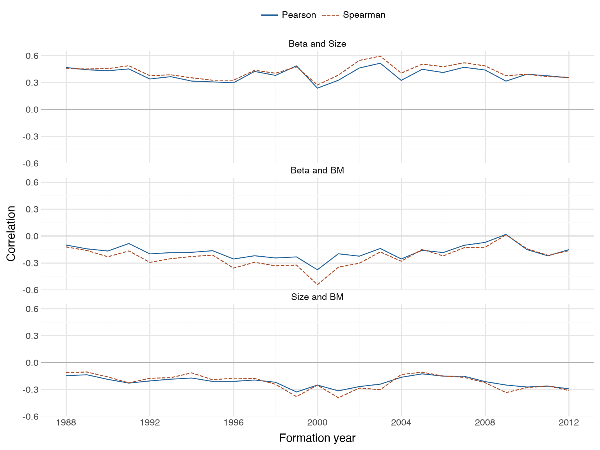
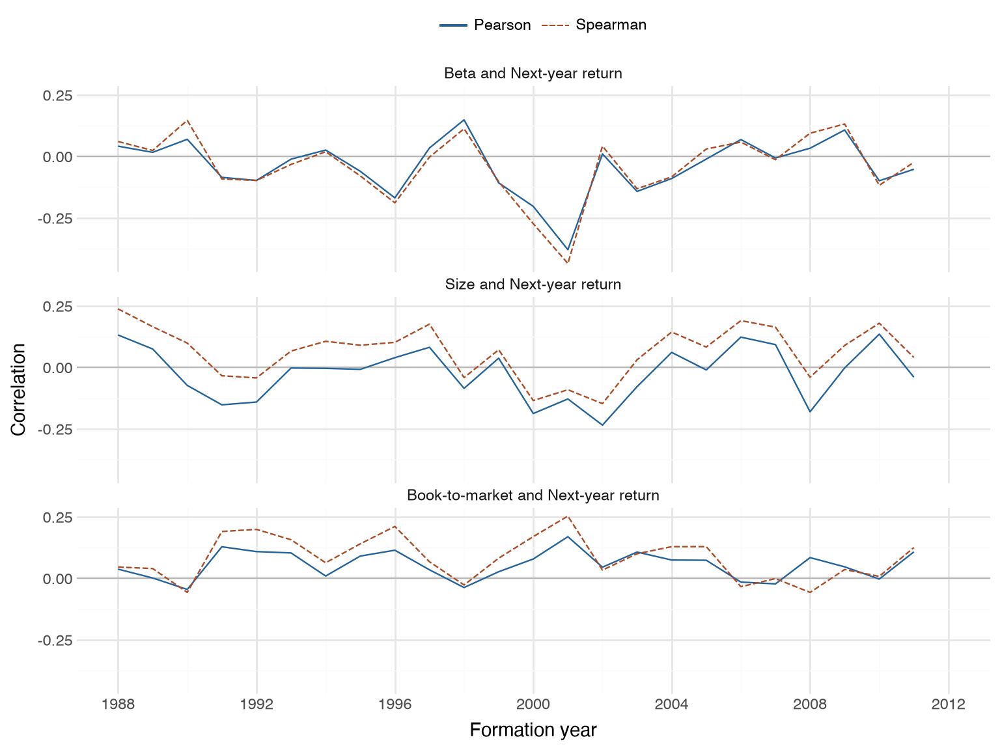

import polars as pl
from eap_pl import build_annual_panel
annual_panel = build_annual_panel()3 Correlation
WarningEarly draft
This chapter is an early draft and still needs a thorough review. The APIs used in the examples may change as I continue working on the book.
In Chapter 3, Bali et al. (2016) compare the cross-sectional associations among beta, size, book-to-market, and next-year excess return. I use the 1988–2012 annual panel from Chapter 2.
3.1 Implementation
3.1.1 Periodic Cross-Sectional Correlations
For variables \(X\) and \(Y\) in year \(t\), keep the \(n_t\) stocks for which both variables are observed. The Pearson correlation measures linear association. With \(\bar X_t\) and \(\bar Y_t\) denoting the means in this paired cross-section, the correlation is
\[ \rho_t(X,Y)= \frac{\sum_{i=1}^{n_t}(X_{i,t}-\bar X_t)(Y_{i,t}-\bar Y_t)} {\sqrt{\sum_{i=1}^{n_t}(X_{i,t}-\bar X_t)^2} \sqrt{\sum_{i=1}^{n_t}(Y_{i,t}-\bar Y_t)^2}}. \tag{3.1}\]
For the Pearson entries in Table 3.1, winsorize each variable at the 0.5th and 99.5th percentiles of the paired cross-section before computing its mean and correlation.
The Spearman correlation measures association between ranks. Let \(x_{i,t}\) and \(y_{i,t}\) be the ranks of the original values within the paired cross-section, with rank 1 assigned to the smallest value. When neither variable has ties, the rank difference \(d_{i,t}=x_{i,t}-y_{i,t}\) gives
\[ \rho_t^S(X,Y)=1-\frac{6\sum_{i=1}^{n_t}d_{i,t}^2}{n_t(n_t^2-1)}. \tag{3.2}\]
With ties, give equal values their average rank and compute the Pearson correlation of the two rank vectors. This is the calculation used by pl.corr(method="spearman"), including when Equation 3.2 applies.
from eap_pl import correlation_matrix, period_correlations
variables = {"Beta": "Beta", "Size": "Size", "BM": "Book-to-market", "excess": "Next-year return"}
annual = period_correlations(annual_panel, variables, "year").sort("year")Code
pair_labels = {
c: c.replace("excess", "Return").replace("BM", "Book-to-market")
for c in annual.columns if "excess" in c or "BM" in c
}
annual.rename(pair_labels).rename({"year": "Year"}).eap.show_table()| Year | Pearson Beta–Size | Spearman Beta–Size | Pearson Beta–Book-to-market | Spearman Beta–Book-to-market | Pearson Beta–Return | Spearman Beta–Return | Pearson Size–Book-to-market | Spearman Size–Book-to-market | Pearson Size–Return | Spearman Size–Return | Pearson Book-to-market–Return | Spearman Book-to-market–Return |
|---|---|---|---|---|---|---|---|---|---|---|---|---|
| 1988 | 0.47 | 0.45 | -0.10 | -0.12 | 0.04 | 0.06 | -0.15 | -0.11 | 0.13 | 0.24 | 0.04 | 0.05 |
| 1989 | 0.44 | 0.45 | -0.14 | -0.16 | 0.02 | 0.02 | -0.14 | -0.11 | 0.07 | 0.17 | 0.00 | 0.04 |
| 1990 | 0.43 | 0.45 | -0.17 | -0.23 | 0.07 | 0.15 | -0.19 | -0.16 | -0.07 | 0.10 | -0.05 | -0.06 |
| 1991 | 0.45 | 0.49 | -0.09 | -0.17 | -0.09 | -0.09 | -0.23 | -0.23 | -0.15 | -0.03 | 0.13 | 0.19 |
| 1992 | 0.34 | 0.37 | -0.20 | -0.30 | -0.10 | -0.10 | -0.21 | -0.18 | -0.14 | -0.04 | 0.11 | 0.20 |
| 1993 | 0.36 | 0.38 | -0.19 | -0.25 | -0.01 | -0.03 | -0.19 | -0.17 | -0.00 | 0.07 | 0.10 | 0.16 |
| 1994 | 0.31 | 0.35 | -0.18 | -0.23 | 0.03 | 0.02 | -0.17 | -0.12 | -0.00 | 0.11 | 0.01 | 0.06 |
| 1995 | 0.31 | 0.32 | -0.17 | -0.21 | -0.06 | -0.08 | -0.21 | -0.19 | -0.01 | 0.09 | 0.09 | 0.14 |
| 1996 | 0.30 | 0.32 | -0.26 | -0.36 | -0.17 | -0.19 | -0.21 | -0.18 | 0.04 | 0.10 | 0.11 | 0.21 |
| 1997 | 0.42 | 0.43 | -0.22 | -0.29 | 0.03 | -0.00 | -0.20 | -0.18 | 0.08 | 0.18 | 0.03 | 0.07 |
| 1998 | 0.38 | 0.40 | -0.25 | -0.33 | 0.15 | 0.11 | -0.22 | -0.24 | -0.09 | -0.04 | -0.04 | -0.03 |
| 1999 | 0.48 | 0.47 | -0.23 | -0.33 | -0.11 | -0.10 | -0.33 | -0.38 | 0.04 | 0.07 | 0.03 | 0.08 |
| 2000 | 0.24 | 0.27 | -0.38 | -0.54 | -0.20 | -0.27 | -0.25 | -0.25 | -0.19 | -0.13 | 0.08 | 0.17 |
| 2001 | 0.32 | 0.38 | -0.20 | -0.35 | -0.38 | -0.44 | -0.32 | -0.39 | -0.13 | -0.09 | 0.17 | 0.25 |
| 2002 | 0.46 | 0.54 | -0.23 | -0.31 | 0.01 | 0.04 | -0.27 | -0.29 | -0.23 | -0.15 | 0.05 | 0.03 |
| 2003 | 0.51 | 0.59 | -0.14 | -0.18 | -0.14 | -0.13 | -0.24 | -0.30 | -0.08 | 0.03 | 0.11 | 0.10 |
| 2004 | 0.32 | 0.40 | -0.26 | -0.28 | -0.09 | -0.08 | -0.17 | -0.13 | 0.06 | 0.14 | 0.07 | 0.13 |
| 2005 | 0.45 | 0.50 | -0.16 | -0.15 | -0.01 | 0.03 | -0.13 | -0.11 | -0.01 | 0.08 | 0.07 | 0.13 |
| 2006 | 0.41 | 0.48 | -0.19 | -0.22 | 0.07 | 0.06 | -0.15 | -0.15 | 0.12 | 0.19 | -0.02 | -0.03 |
| 2007 | 0.47 | 0.52 | -0.11 | -0.13 | -0.01 | -0.01 | -0.15 | -0.17 | 0.09 | 0.16 | -0.02 | -0.00 |
| 2008 | 0.44 | 0.48 | -0.07 | -0.13 | 0.03 | 0.09 | -0.21 | -0.23 | -0.18 | -0.04 | 0.08 | -0.06 |
| 2009 | 0.31 | 0.37 | 0.02 | 0.01 | 0.11 | 0.13 | -0.25 | -0.34 | -0.00 | 0.09 | 0.05 | 0.04 |
| 2010 | 0.39 | 0.39 | -0.15 | -0.14 | -0.10 | -0.12 | -0.27 | -0.28 | 0.14 | 0.18 | -0.00 | 0.01 |
| 2011 | 0.37 | 0.36 | -0.22 | -0.22 | -0.05 | -0.02 | -0.26 | -0.26 | -0.04 | 0.04 | 0.11 | 0.13 |
| 2012 | 0.35 | 0.36 | -0.15 | -0.16 | -0.29 | -0.31 |
3.1.2 Average Cross-Sectional Correlations
Average the annual coefficients for each pair. If \(\mathcal T_{XY}\) is the set of years with an available coefficient and \(N_{XY}\) is its size, the Pearson and Spearman averages are
\[ \bar\rho(X,Y)=\frac{1}{N_{XY}}\sum_{t\in\mathcal T_{XY}}\rho_t(X,Y) \tag{3.3}\]
and
\[ \bar\rho^S(X,Y)=\frac{1}{N_{XY}}\sum_{t\in\mathcal T_{XY}}\rho_t^S(X,Y). \tag{3.4}\]
Each available year has the same weight. The next-year return is unavailable for the 2012 formation cohort, so return correlations are averaged over 24 years. The other pairs use all 25 years.
average = annual.select(pl.exclude("year").mean())Code
average.rename(pair_labels).eap.show_table()| Pearson Beta–Size | Spearman Beta–Size | Pearson Beta–Book-to-market | Spearman Beta–Book-to-market | Pearson Beta–Return | Spearman Beta–Return | Pearson Size–Book-to-market | Spearman Size–Book-to-market | Pearson Size–Return | Spearman Size–Return | Pearson Book-to-market–Return | Spearman Book-to-market–Return |
|---|---|---|---|---|---|---|---|---|---|---|---|
| 0.39 | 0.42 | -0.18 | -0.23 | -0.04 | -0.04 | -0.22 | -0.22 | -0.02 | 0.06 | 0.06 | 0.08 |
3.2 Interpreting Correlations
The two companion figures plot the annual coefficients in Table 3.1. Each panel uses formation years on the horizontal axis. In the second figure, the return paired with year \(t\) comes from year \(t+1\).
Code
from plotnine_polars import aes
def plot_correlations(pairs):
labels = [f"{variables[a]} and {variables[b]}" for a, b in pairs]
correlations = pl.concat(
annual.select("year", Pearson=f"Pearson {a}–{b}", Spearman=f"Spearman {a}–{b}")
.unpivot(index="year", variable_name="method", value_name="correlation")
.with_columns(pair=pl.lit(label))
for (a, b), label in zip(pairs, labels, strict=True)
).with_columns(pl.col("pair").cast(pl.Enum(labels)))
return (
correlations
.ggplot(aes(x="year", y="correlation", color="method", linetype="method"))
.geom_hline(yintercept=0, color="#b3b3b3", size=0.4)
.geom_line(na_rm=True)
.facet_wrap("pair", ncol=1)
.scale_x_continuous(breaks=range(1988, 2013, 4))
.scale_color_manual(values={"Pearson": "#24639a", "Spearman": "#ac4c27"})
.scale_linetype_manual(values={"Pearson": "solid", "Spearman": "dashed"})
.labs(x="Formation year", y="Correlation", color="", linetype="")
.theme_minimal()
.add_theme(figure_size=(8, 6), legend_position="top")
)
plot_correlations([("Beta", "Size"), ("Beta", "BM"), ("Size", "BM")])
Larger stocks tend to have higher betas. Both measures of correlation also show that larger stocks tend to have lower book-to-market ratios. Market capitalization enters the denominator of book-to-market, which helps explain part of the association.
Code
plot_correlations([("Beta", "excess"), ("Size", "excess"), ("BM", "excess")])
The correlations with next-year returns vary considerably. For example, the Pearson correlation between beta and the following year’s return moves from 0.15 for the 1998 formation cohort to −0.11 for the 1999 cohort. Its average of −0.04 in Table 3.2 conceals that change.
3.3 Presenting Correlations
Table 3.3 puts the same averages in a compact matrix. Read Pearson correlations below the diagonal and Spearman correlations above it.
Code
correlation_matrix(average.row(0, named=True), variables).eap.show_table()| Measure | Beta | Size | Book-to-market | Next-year return |
|---|---|---|---|---|
| Beta | 0.42 | -0.23 | -0.04 | |
| Size | 0.39 | -0.22 | 0.06 | |
| Book-to-market | -0.18 | -0.22 | 0.08 | |
| Next-year return | -0.04 | -0.02 | 0.06 |